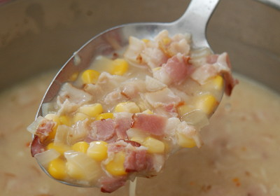

| Zutaten für 4 Personen | |
| 180 | Speck |
| 1 | Zwiebel |
| 1 Dose | Maiskörner |
| 1 Liter | Hühnerbouillon |
| 1 dl | Rahm |
| 1 El | Maizena |
| 1 Prise | Chilipulver |
| 1 Prise | Salz |
Die Zwiebel in feine Würfel schneiden.
Erst wird der Speck gebraten. Dazu werden die Speckstreifen mit einem scharfen Messer quer 3 bis 4 mal geschnitten.
Den Speck in der Bratpfanne anbraten. (Da er schon viel Fett enthält muss nicht extra gefettet werden.)
Die Zwiebeln zugeben und glasig dünsten.
Danach die Maiskörner zugeben.
Im Originalrezept kämen jetzt noch "Chilpotle Peppers in Adobo Sauce" dazu. Das ist eine Spezialität welche es in der Schweiz nicht zu kaufen gibt. Es geht auch ohne. Man darf auch andere Chilis rein schnätzeln.
Mit einem Liter Hühnerbouillon ablöschen.
Den Rahm dazu geben.
Einen Löffel Maizena in wenig lauwarmem Wasser auflösen und zugeben. (Hier kann man sich vorantasten und mehr zugeben bis es zu einem "Amerikaner-Chowder" wird.)
Jetzt auf kleiner Flamme 15 Minuten köcheln lassen.
Chilipulver beigeben und mit Salz würzen
Mit Brot servieren.
http://thepioneerwoman.com/cooking/2010/10/corn-chowder-with-chilies/
Trotz Vorbehalten von Sandra habe ich diese Zufallsentdeckung auf dem Web ausprobiert. Sie hat sehr gut geschmeckt. Sandra meint für einen Amerikaner wäre meine Version viel zu wässerig gewesen. Dem kann man aber mit mehr Maizena abhelfen. Wird nicht das letzte mal gewesen sein, dass ich diese Suppe mache! RE, 26 Mai 2013
@LINKBACK_TAG@ @WAKELOCK@